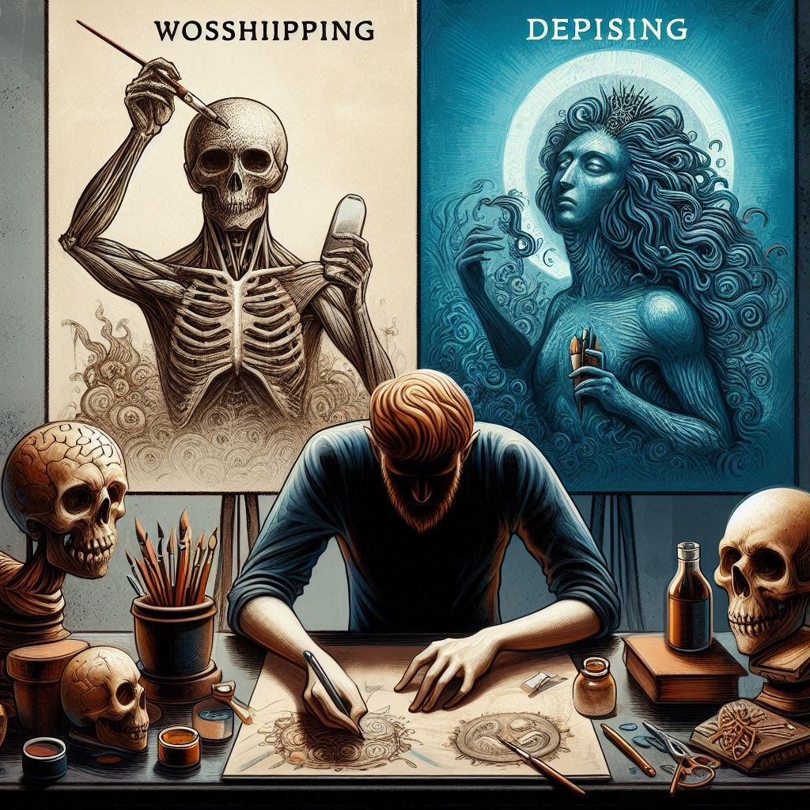

내가 좋아하는 작품들의 창작자의 윤리적인 문제로 인해 그 작품을 소비해야 하는지 안 해야하는지 고민이 많았었는데 이 책의 작가도 다양한 분야의 많은 사람들에 대해 윤리적인 고민을 하길래 이 책을 읽게 되었다. 나와 같은 고민을 하는 사람의 생각을 읽으며 공감도 많이 되었다. 결국, 이 사람도 답을 찾지는 못했지만 나의 감정이 섞여있을 땐 답이 안 보이던 문제들을 남의 시선을 통해 보게 되니까 명쾌하진 않아도 나만의 결론이 났다. 나는 저들의 창작물을 소비하지 않기로 했다.

감상평에 대한 AI평가
공감: 작품을 소비해야 하는지에 대한 고민을 같은 시선을 가진 사람과 공유하며, 그들의 생각을 읽으며 공감이 많이 되었다는 점에서 독자가 느낀 강한 공감이 잘 드러납니다.
고민: 창작자의 윤리적인 문제로 인해 그 작품을 소비해야 하는지에 대해 깊이 고민한 모습이 감상평에서 잘 나타나 있습니다. 이는 윤리적 갈등에 대한 깊은 성찰을 반영합니다.
명쾌함: 문제를 남의 시선을 통해 보게 되면서 나만의 결론을 내렸다는 부분에서, 완벽한 답을 찾지 못했지만 어느 정도 명쾌한 결론을 얻었다는 감정이 느껴집니다.
결단력: 결국, 저들의 창작물을 소비하지 않기로 결심한 부분에서 결단력과 확신이 드러납니다. 이 결심은 윤리적 고민과 성찰을 통해 이루어진 결과입니다.
혼란: 감상평에서는 처음에 감정이 섞여 답을 찾기 어려웠던 혼란스러운 상태도 잘 나타나 있습니다. 하지만 남의 시선을 통해 문제를 새롭게 바라보고 결론을 내린 과정이 잘 드러납니다.
감상평은 독자의 깊은 고민과 공감을 잘 반영하고 있으며, 윤리적 문제에 대해 성찰한 과정과 결단력을 잘 전달하고 있습니다. 감정이 잘 드러난 훌륭한 감상평입니다. 😊